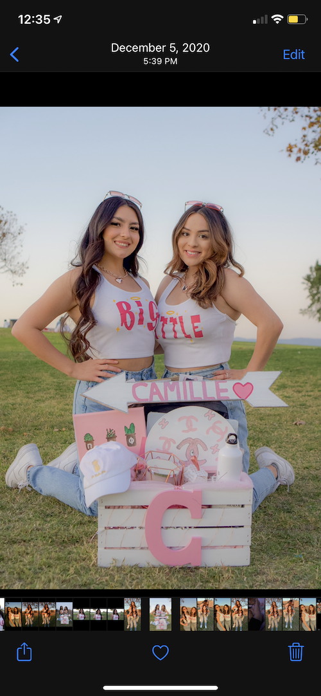
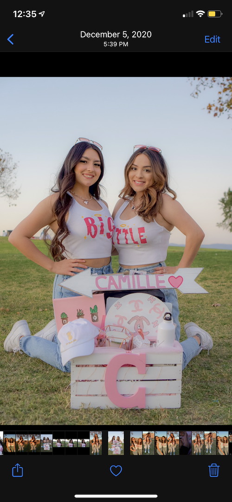

Portfolio



My name is Daisy Garcia. I am a nineteen year old from Norwalk, CA. I am currently attending the University of California, Riverside as a second year. I have not yet declared a major but I have always known I wanted to do something that involved having a good influence on other people. As the oldest sibling and first kid in the family to go to college, I felt it was my job to be a role model to not only my siblings but the rest of my family. I love being able to inspire others to want to be a better version of themselves. I have always aspired to give back and help everyone I can. Whether that meant getting into law enforcement or more involved in social media. I decided to go with social media because I was more invested in helping others grow their platforms that would eventually lead to more opportunities. I wanted to go into law enforcement to help solve crimes and bring justice to families. However, I had a change of plans when I spent the day with my cousin because she has been an influencer for three years and it has been going good for her. I will never forget how happy she was to truly be doing what she has always been wanting to do all her life.
Growing up, I always wanted to be a vlogger in hopes that I could make my viewers happy and inspire them to just go for it and follow their dreams. Being a successful youtuber could open so many doors for a person if they make the commitment to it. I decided to commit myself to this by buying a camera and it all went up from there. It took some time to get used to being on camera and not being scared to be myself with the world, but eventually I got used to it and developed habits that helped me in so many ways. I want to help other people follow their dreams and share the tips and tricks that worked for me with them. Being an influencer has helped me grow in many ways. I have been given the opportunity to network with a lot of other people, build up my resume, and gain a lot of interpersonal skills.
I admit starting it is probably the hardest thing to do because not everyone is ready to put themselves out there but having the right mindset and guide can go a long way. I started at the very bottom with nothing and as I grew, my knowledge of media did as well. It is extremely important to know how social media works and what to do and not to do. It has become more of a fun career rather than a boring job because I love what I do no matter how stressful it gets. I do hope to expand my career choices in the future and hopefully get into marketing, but that is after I have a few years of experience with the influencing side of social media.
• Publicity Commissioner for ASB
• Made posters, spirit weeks, and hosted pep rallies
• Responsible for packaging Amazon boxes into the trucks.
• Labeling products
• Director of Recruitment Events for Pi Beta Phi
• Planned recruitment events to host
• Created spreadsheets to organize the active girls and new members
• Hosting workshops that help with conversation practice